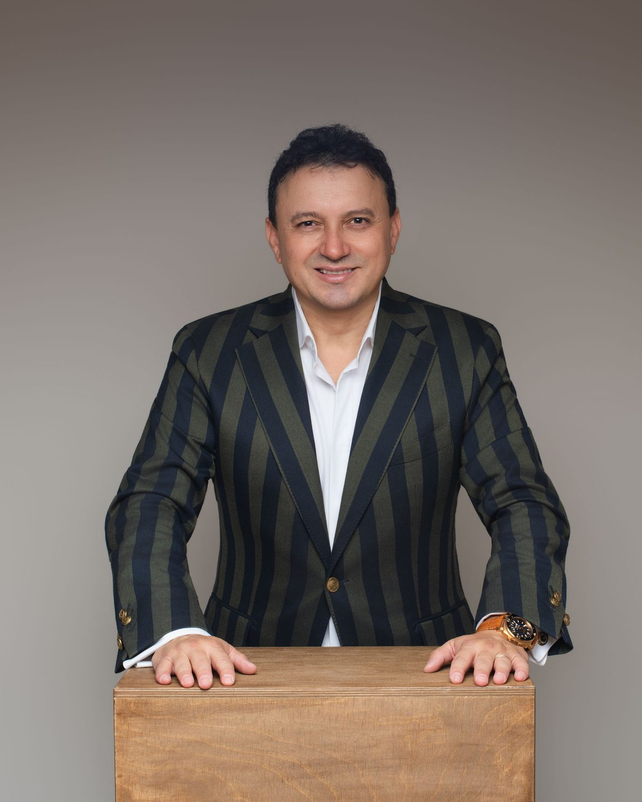

Fonduri europene și PNRR
Identificăm apelul potrivit, verificăm eligibilitatea și scriem cererea de finanțare, planul de afaceri și studiile necesare.
- PNRR, POCIDIF, Programe Regionale
- Orizont Europa, Europa Digitală
- Cereri de plată și rambursare
Ciprian Constantin Ghioc · Founder & CEO, INNOVIO VC
Transformăm ideile de investiție în proiecte finanțate: de la identificarea apelului potrivit și scrierea cererii de finanțare până la achiziții, implementare și rambursare, cu experiența celui care a condus autorități de management.



Am fost Director General al Autorității de Management pentru Programul Operațional Competitivitate (POC 2014–2020) și al Autorității de Management pentru POS Mediu. Știu cum se scrie un ghid al solicitantului, cum se evaluează un proiect și unde apar de obicei problemele în implementare.
În 2023 am fondat INNOVIO VC, o firmă de consultanță strategică pentru companii, autorități publice, spitale și unități de învățământ care vor să acceseze fonduri europene, PNRR și finanțări naționale. Lucrăm în domenii în care finanțarea poate schimba cu adevărat un business sau o comunitate: digitalizare, energie, sănătate, educație și inovare.
„Vision Crafting, Value Creating”
O singură echipă pentru tot drumul: de la idee până la ultima cerere de plată.
Identificăm apelul potrivit, verificăm eligibilitatea și scriem cererea de finanțare, planul de afaceri și studiile necesare.
Documentații de atribuire și caiete de sarcini conform Legii 98/2016, proceduri pentru beneficiari privați și evaluarea ofertelor.
Încadrare în GBER (Reg. 651/2014) sau de minimis, intensități, cheltuieli eligibile și obligații după încheierea proiectului.
Proiecte de digitalizare, cloud, securitate cibernetică și inteligență artificială pentru companii și instituții publice.
Finanțare pentru parcuri fotovoltaice, eficiență energetică, stocare și tranziție verde.
Proiecte pentru spitale, clinici și furnizori de servicii medicale: echipamente, digitalizare, infrastructură.
Laboratoare inteligente, dotări și digitalizare pentru școli, licee și universități.
Strategie de creștere, structurarea investițiilor, legătura cu investitori și finanțare mixtă (granturi și capital).
Pe lângă granturi, vă ajutăm să atrageți capital de la fonduri de investiții și să prezentați investitorilor rapoarte financiare credibile.
Pregătire pentru investitori, identificarea fondurilor VC/PE potrivite și asistență până la semnarea tranzacției, inclusiv combinarea capitalului cu granturi UE.
Servicii venture capital și private equityRapoarte independente pentru achiziții, investiții VC/PE, credite și proiecte cu fonduri UE: calitatea profitului, datorie netă, capital de lucru, riscuri.
Servicii due diligence financiarAnalizăm compania sau instituția, investiția dorită și apelurile deschise sau anunțate.
Construim bugetul, indicatorii, planul de afaceri sau studiul de fezabilitate și depunem cererea.
Pregătim procedurile de achiziție și urmărim calendarul, contractele și riscurile proiectului.
Cereri de plată și rambursare, rapoarte de progres și sustenabilitatea proiectului după finalizare.
O selecție din apelurile deschise publicate pe portalul oficial oportunitati-ue.gov.ro. Apăsați „Aplică acum” și primiți o ofertă de consultanță.
Actualizat automat: 24 noiembrie 2026, ora 07:43 · 395 apeluri active · sursa: oportunitati-ue.gov.ro
INNOVIO VC acoperă întregul ciclu al unui proiect finanțat: identificarea apelului potrivit, analiza de eligibilitate, strategia de finanțare, scrierea cererii de finanțare și a planului de afaceri, depunerea, clarificările din evaluare, achizițiile publice sau private din proiect, implementarea, raportarea și cererile de rambursare sau de plată.
Da. Lucrăm cu companii private (IMM-uri și companii mari), autorități publice locale și centrale, spitale, unități de învățământ și ONG-uri. Experiența de conducere a unor autorități de management ne ajută să înțelegem atât perspectiva beneficiarului, cât și pe cea a finanțatorului.
În perioada 2021–2027 sunt active, printre altele, PNRR, POCIDIF, cele opt Programe Regionale, Programul Sănătate, Programul Educație și Ocupare, Programul Incluziune și Demnitate Socială, Programul Tranziție Justă, plus programele gestionate direct de Comisia Europeană (Orizont Europa, Europa Digitală, Erasmus+). Pagina noastră de fonduri active se actualizează automat zilnic din sursa oficială oportunitati-ue.gov.ro.
Da. Pregătim documentațiile de atribuire și caietele de sarcini conform Legii 98/2016, procedurile pentru beneficiari privați, evaluarea ofertelor și răspunsurile la clarificări, astfel încât cheltuielile să rămână eligibile la verificare.
Trimiteți-ne pe WhatsApp sau pe email câteva informații: domeniul de activitate (cod CAEN), regiunea, tipul investiției și valoarea estimată. Vă răspundem cu programele potrivite și cu pașii următori.
Multe finanțări pentru firme sunt acordate ca ajutor de stat, în baza Regulamentului (UE) nr. 651/2014 (GBER) sau ca ajutor de minimis. Încadrarea corectă stabilește intensitatea finanțării, cheltuielile eligibile și obligațiile pe care le aveți după încheierea proiectului.
Răspundem rapid pe WhatsApp, telefonic sau pe email.